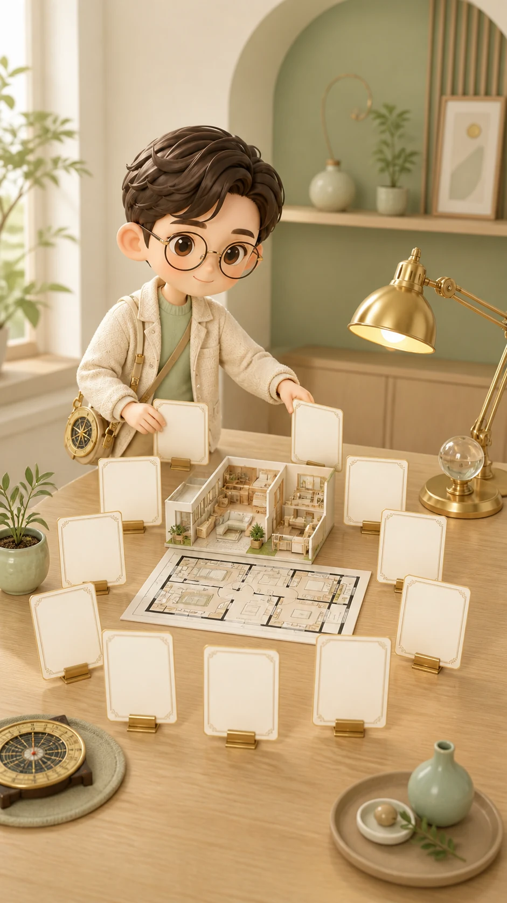

결제 후 리포트 허브
10개 흐름 중 지금 보고 싶은 것부터 열어보세요
이 집이 나에게 맞는지, 전체 핏부터 침실·현관·돈·관계·액션 플랜까지 항목별로 나눠 봅니다.
10개 대분류
공간별 처방
상담 이어가기

상태 확인
상세는 서버 권한 확인 후 열립니다
이 화면은 결과 목록과 상담 진입을 보여주며, 상세 본문 전체는 06 단계에서 항목별로 확인합니다.
권한 확인 대기
운영 환경에서는 로그인과 결제 권한을 확인한 뒤 상세 리포트를 엽니다.
입력값을 찾지 못했습니다
직접 URL로 들어온 경우에도 목록은 볼 수 있지만, 개인화된 상세는 입력과 권한 확인이 필요합니다.
빠른 이동
관심 있는 흐름으로 바로 가기
전체 결과 목록
대분류 10개가 모두 열려 있습니다
목록에는 결론 전체를 풀지 않고, 각 상세에서 확인할 방향만 짧게 보여줍니다.
상담 이어가기
걸리는 문장을 바로 물어보세요
예를 들어 “침대 위치부터 봐줘”, “이 집 계속 살아도 돼?”처럼 짧게 물어도 됩니다.